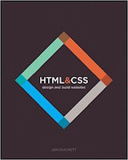
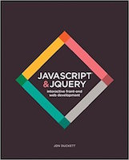

| Cover | Description | Price |
|---|---|---|
|  | Every day, more and more people want to learn some HTML and CSS. Joining the professional web designers and programmers are new audiences who need to know a little bit of code at work (update a content management system or e-commerce store) and those who want to make their personal blogs more attractive. Many books teaching HTML and CSS are dry and only written for those who want to become programmers, which is why this book takes an entirely new approach. | $17.45 |
|  | By the end of the book, not only will you be able to use the thousands of scripts, JavaScript APIs, and jQuery plugins that are freely available on the web, and be able to customize them - you will also be able to create your own scripts from scratch. | $25.97 |